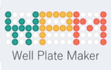

Présentation de Thomas Burger
Well Plate Maker: un petit outil bien commode pour la multi-omique clinique
Vous trouverez le diaporama à ce lien : pdf.
Le lien vers la publication : https://doi.org/10.1093/bioinformatics/btab065 et celui vers le package Bioconductor wpm : https://bioconductor.org/packages/release/bioc/html/wpm.html .
